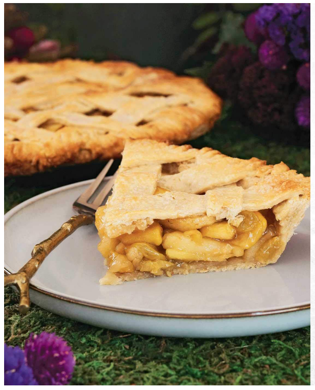

Arden Apple Pie

Description
Although there are an abundance of exotic fruits to be found in Ardenweald,
their variety of humble apples is the best I've ever tasted.
Ingredients
- flour
- oats
- brown sugar
- apples
- unsalted butter
- lemon juice
- raisins
Steps
- Combine the dry ingredients in the bowl of a food processor and pulse a few times to combine.
- Add the butter, and pulse until there are no pieces larger than a pea.
- Pulse a few more times while drizzling the water in, until the mixture just forms a ball.